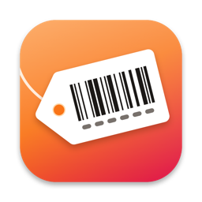

Label Printer StudioSupport
Answers to common questions are below. If yours isn’t, email k.fitzgerald310@gmail.com with your Mac model and macOS version.
Printing
Which printers can it print to?
It prints through the Mac’s own print system, so your label printer needs a macOS driver from its maker. Add the printer in System Settings › Printers & Scanners with that driver, and Label Printer Studio prints to it through the Mac’s print dialog, one label per page, on a page the size of the label. Before a big job, print one label to check the size and position.
Can I print sheets of labels on an office printer?
Yes, with Pro. Under Paper in the inspector, choose your sheet’s Avery number (5160, 5163, 5167, 22806, L7160, L7163 and more). Click the first empty label to use up a partly used sheet, and use Print Alignment Page to check the fit on plain paper first. Print at 100%, not “Scale to fit”.
Can it print postage or a carrier’s shipping label?
It doesn’t buy postage. If you’ve bought a label from a carrier or marketplace and saved its PDF, open it in the PDF to 4×6 tab: Label Printer Studio finds the label on the letter-size page, turns it upright and fits it to a 4 × 6 label, and checks its barcodes still read. Its 4 × 6 Shipping Label template is a from and ship-to address label made from your own data.
My labels come out sideways or off center.
Choose Label › Printer Setup: print the test page, measure the box on it with a ruler, and type what you measured. The correction is saved for that printer. If labels come out sideways, turn on Turn 90° on the page under Printer. If the driver lists its own label sizes, choose the matching one under Paper Size in the print dialog.
My barcodes don’t scan.
Set Printer resolution under Printer to your printer’s (203 or 300 dpi, usually on its box or in its manual), so the bars land on whole printer dots. If the barcode is small, give its field more room on the label. For GS1-128, type the data as (AI)value pairs, like (01)09501101530003(10)AB12.
Spreadsheets
What files can I import?
CSV files (comma, semicolon or tab separated) and Excel .xlsx files with a header row. From Numbers, choose File › Export To › CSV or Excel first.
How do I print several of one item?
Add a column with the count (one named Qty or Quantity is picked automatically) and choose it as the quantity column on the Data tab. A blank quantity counts as 1, and 0 skips the row.
Why did my UPC codes get a 0 at the front?
Excel drops leading zeros from codes kept as numbers. Label Printer Studio puts the zero back only when the check digit proves it, and says so on the Data tab.
Is there a limit on how many labels?
A job can have up to 20,000 labels, and up to 1,000 from one row. The Data and Preview tabs tell you when a sheet asks for more.
Can it read my eBay, Etsy or Poshmark download?
Yes. It recognizes eBay’s active listings and orders reports and File Exchange files, Etsy’s listings and order items downloads, and Poshmark’s sales report, and matches their columns to the Seller Labels templates (SKU, title, condition, price, order). eBay’s condition numbers print as words. The sites’ files have no bin column, so type the bin on the label or add a Bin column to the file.
Label Printer Studio Pro
What’s free, and what does Pro add?
Free has the label-roll templates and sizes, stickers, logos and borders, Printer Setup, spreadsheet import and a preview of every label (labels past the first 10 show a lock); it prints or exports up to 10 labels at a time with a small watermark and converts 3 shipping labels a day. Pro prints whole sheets in one job, adds serial numbers and saved templates, removes the watermark, and adds sheets of labels, the Code 39, GS1-128, ITF-14 and Data Matrix barcodes, the eBay, Etsy, Poshmark and FNSKU templates, and any number of 4 × 6 shipping labels. It’s a one-time purchase on Gumroad, with no subscription, and the license key works on up to 3 of your Macs.
Where do I enter my license key?
Choose Label Printer Studio › Label Printer Studio Pro… (it says License… once a key is in), paste the key from your Gumroad receipt and click Activate.
How do I get updates?
Label Printer Studio checks for updates on its own; you can also choose Check for Updates… from the Label Printer Studio menu. Updates are free.
Purchases
How do I get a refund?
Gumroad handles payment. Reply to your Gumroad receipt or email k.fitzgerald310@gmail.com.
Do I have to pay again on another Mac?
No. One license key works on up to 3 of your Macs. Download the app again from your Gumroad receipt or library and enter the same key.